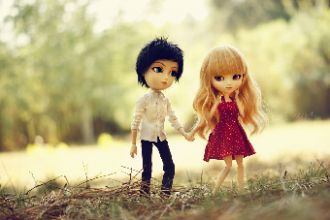

[Chorus:]Our love is alive and so we begin,Foolishly layin' our hearts on the table,Stumblin' in,Our love is a flame burnin' within,
Брат мой, у тебя сегодня день рожденья,Извини, что снова далеко я,Но и врозь всегда мы вместе - ты моя кровь.Брат мой, ты весной рожден, а я осенний.
Стрелки крутятся все быстрей,Стали звёзды на год взрослей,Лист сорвался с календаря,Но не стоит грустить зря.И не зря в день рождения
Янтарный луч рассвета застыл в моем окнеНо несмотря на это немного грустно мнеДень наступил и значит все на своих местах
Кез hамар айсор кянкум,hампюрнер у сере ир hет берум,Тарин мек ангаме линум,Таредарцне ко... Кез hамар айсор кянкум,
Школьный двор и смех подружек,Самый чистый, самый звонкий.И бегут по теплым лужамБосоногие девчонки.И уже других качают
Зачем все эти признания, некстати.Скажи, мне бы было легче не знать, что ты врешь.И теперь навстречу бегут этажи, и мои кусочки, их не соберешь.
Снова зовёт тебя ночь.Снова уходишь ты вдаль.Кто мне сумеет помочь.Снова теряю тебя.
Qui entre dans l’histoireEntre dans le noirHistoire d’y voirMon plus beau geste

We were both young when I first saw youI close my eyesAnd the flashback startsI'm standing thereOn a balcony of summer air
Sous le soleilBleu marine et blueEbloui pareilJusqu'a en oublier toutFermer les yeuxC'est le meme bleuDans le coeur
The smell of your skin lingers on me now,You’re probably on your flight back to your home town.I need some shelter of my own protectionbaby,
Как хорошо что есть родимый дом что в нем еще не прохудилась крыша и словно в детстве печка хлебом дышит и в доме пахнет теплым молоком.
Утро, словно миг откровенья,Краткий миг, дарящий зарю,Снова в это чудо-мгновенье,Снова я тебе повторю, повторю, повторю:Радоваться жизни самой,
Диск телефона я бессмысленно кручу,А я твой номер набираю и молчу…Сегодня вечером ко мне придут друзья.А почему же мне придти к тебе нельзя?
Дни проносились разлук и ночи слёз.Ах! Как же ранят шипами стебли роз.Но я нашей встрече рада,Я ждала тебя!
Как по горкам, по горамБелый лебедь леталБелый лебедь леталЛебедушку выкликал
Край жемчужный, долина чудесных людейСтал нам домом родным и любовью своей!Ты этот мир весь озаряешь, словно чистый алмаз!
В вихре радостной лезгинкиГордый танец кружит нас!Море счастья и улыбки -Это северный Кавказ.Эти цепи гор могучих!Эти реки и поля!
Don’t say that you love me I’ve read all your stories They burn [x2]